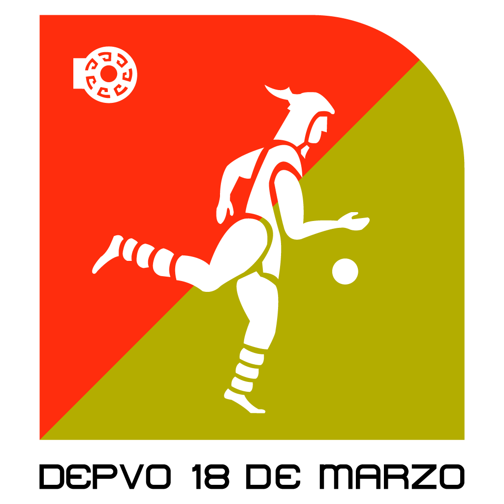

| Actualmente el metro cuenta con 163 estaciones repartidas en 12 lineas. Las más importantes son: |
| TRANSBORDOS | ||
|  | ||
|
||
|
|
|
|
||
|
||
TERMINALES |
||
|
LINEA 1 | |
 |
LINEA 2 | |
| LINEA 3 | ||
| LINEA 4 | ||
|
LINEA 5 | |
| LINEA 6 | ||
| LINEA 7 | ||
| LINEA 8 | ||
|
LINEA 9 | |
|
LINEA A | |
| LINEA B | ||
| LINEA 12 | ||